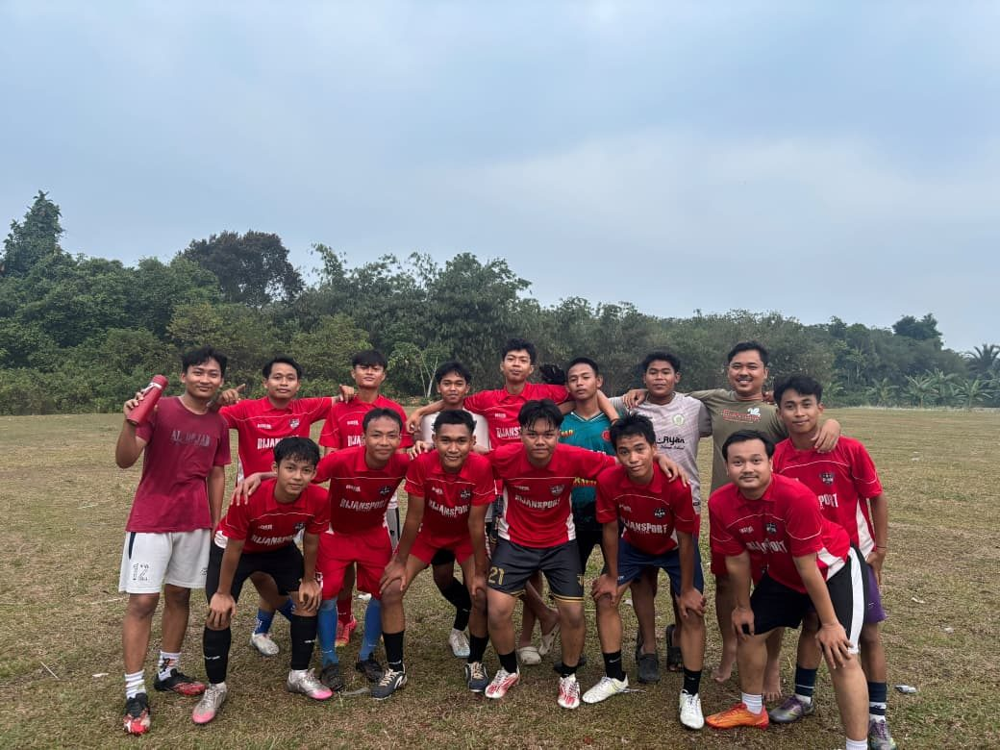

Latihan Sepakbola Tumbuhkan Kebersamaan dan Sportivitas Siswa

Siswa MTs dan MA Al-Riyadhul Jannah mengikuti latihan sepakbola sebagai salah satu kegiatan olahraga yang rutin diselenggarakan di lingkungan sekolah.
Latihan diawali dengan pemanasan, dilanjutkan dengan teknik dasar seperti mengumpan, menggiring bola, dan menembak ke gawang. Pada sesi akhir, siswa bermain dalam pertandingan latihan.
Selain meningkatkan kebugaran jasmani, kegiatan ini mengajarkan siswa tentang kerja sama tim, sikap sportif, serta menghargai lawan dan keputusan wasit.
Para siswa tampak antusias mengikuti setiap sesi latihan. Suasana kebersamaan terasa kuat di antara peserta dari berbagai kelas.
Sekolah berharap kegiatan ini dapat menyalurkan bakat siswa di bidang olahraga sekaligus membentuk pribadi yang sehat, disiplin, dan berjiwa sportif.
← Kembali ke Berita